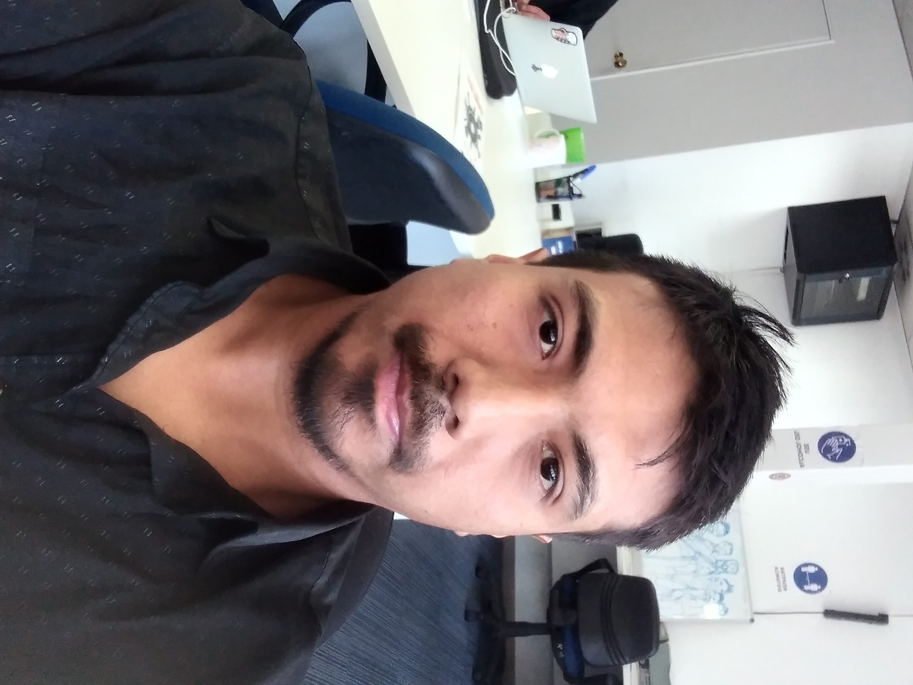

Currículum Vitae

Roger Ancamilla
Periodista, Licenciado en Comunicación Social.
Datos Personales:
- Nombre Completo: Roger Benito Ancamilla Zambrano
- Fecha de Nacimiento: 12 de agosto de 1990
- Nacionalidad: chileno
Resumen:
Periodista titulado de la Universidad de Chile con experiencia en Community Management y Content Management. Elaboración de contenidos creativos y corporativos para marcas nacionales e internacionales. Conocimientos en Analítica Digital y Reportería que permiten la elaboración de estrategias Social Media efectivas y adecuadas para cada marca y necesidad.
Habilidades:
- Community Manager y Content Manager.
- Redacción y creación de contenidos para redes sociales y páginas web.
- Elaboración de estrategias Social Media.
- Reportería y Analítica Digital.
Experiencia Reciente:
- 2020 a la actualidad: Agencia de Comunicaciones Fenómena.
- 2018 a 2020: Festival de Cine Infantil Pichikeche.
- 2016 a 2018: Consultora Laboral Aptissimi.
Redes Sociales que actualmente manejo:
Páginas Web que actualmente manejo: